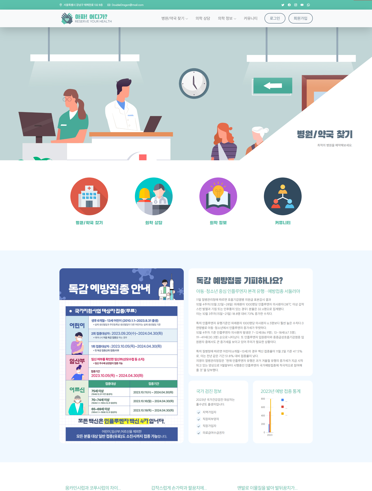

Spring Framework Project
프로젝트 기간 : 2023.12.18. ~ 2023.12.27.

Spring Framework
아파! 어디가?
전국 병원/약국 통합 검색, 예약 및 의학 정보 제공 웹사이트
Spring Framework를 활용하여 제작한 전국 병원/약국 통합 검색, 예약 웹사이트입니다.
Servlet/JSP 프로젝트에서 제작한 웹사이트를 기반으로 향상된 서비스와 인터페이스를 구현했습니다.

Servlet/JSP
아파! 어디가?
전국 병원/약국 통합 검색, 예약 및 의학 정보 제공 시스템
Servlet/JSP를 활용하여 제작한 전국 병원/약국 통합 검색, 예약 웹사이트입니다. 요청(Request)과 응답(Response)의 구조를 파악하여 사용하였고, 사용자 중심의 인터페이스를 설계하여 구현했습니다.
View Project
MySQL
쌍용교육센터 관리 시스템
교육센터 시스템 DB 구현
데이터베이스를 활용하여 학생, 강사, 강의 성적 등 다양한 정보를 효율적으로 관리하기 위해 설계 된 시스템입니다. 데이터의 정확성과 일관성을 유지하며 학사 관리 업무를 지원합니다. 학생 성적 추척, 강의 일정 관리, 강사 업무 지원 등을 통해 효율성과 투명성을 제고하도록 구현했습니다.
View Project
Java Consol Project
TALRENT(탈렌트)
렌탈업체 중개 서비스 플랫폼
Java 언어를 이용한 consol 프로젝트입니다. 기업들이 한 플랫폼에서 제품을 등록 및 관리할 수 있으며 그 외 고객 서비스는 플랫폼에서 관리하는 환경을 구축했습니다.
View Project